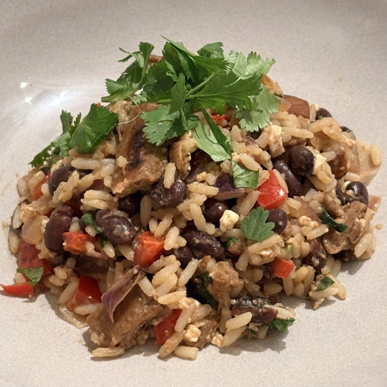

ingredientes
- 200 g de tofu defumado
- 320 g de carne vegetal em pedaços
- 150 g de arroz branco cru
- 1 lata (400 g) de feijão cozido e escorrido
- 200 g de queijo cottage
- 1 cebola picada
- 2 dentes de alho
- 1 pimentão vermelho picado
- Temperos: cominho, páprica defumada, pimenta do reino, sal e coentro
preparo
- Cozinhe o arroz em água com sal.
- Corte o tofu em cubos de aproximadamente 2 cm e tempere com páprica, cominho e pimenta.
- Leve os cubos de tofu à air-fryer ou ao forno a 190 °C por 15 minutos, virando na metade do tempo.
- Doure os pedaços de carne vegetal em uma frigideira com azeite e reserve.
- Refogue a cebola, o alho e o pimentão até dourar.
- Adicione o feijão e os temperos.
- Misture o arroz cozido e os pedaços de carne vegetal.
- Com o fogo desligado, incorpore o queijo cottage aos poucos e delicadamente.
- Adicione os cubos de tofu defumado.
- Sirva com coentro.
observações
Essa receita foi planejada para servir 5 porções, com os seguintes macros aproximados por porção: 460 kcal; proteína: 35 g; carboidratos: 47 g; gorduras: 15 g.
sobre os ingredientes
Tofu defumado
O tofu defumado adiciona um sabor mais próximo ao baião de dois tradicional, mas também é possível usar tofu natural. Nesse caso, pressione o tofu com papel-toalha por 10 minutos e tempere-o também com sal.
Carne vegetal em pedaços
Qualquer carne vegetal serve para esse propósito, mas o ideal é utilizar algo semelhante ao charque ou à carne de sol. Para essa receita, utilizamos os AH Terra Plantaardige runderreepjes.
Feijão
Podem ser utilizados diferentes tipos de feijão, como feijão preto (zwarte bonen), feijão vermelho (kidney bonen), feijão carioca (bruine bonen), feijão-fradinho (black-eyed peas), entre outros.